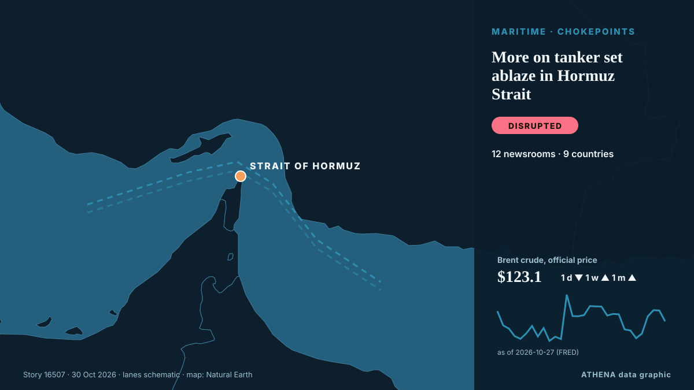

Shipping & ports
| 17 Oct | 1 |
|---|---|
| 18 Oct | 0 |
| 19 Oct | 0 |
| 20 Oct | 1 |
| 21 Oct | 0 |
| 22 Oct | 2 |
| 23 Oct | 2 |
| 24 Oct | 1 |
| 25 Oct | 2 |
| 26 Oct | 2 |
| 27 Oct | 4 |
| 28 Oct | 3 |
| 29 Oct | 4 |
| 30 Oct | 2 |

More on tanker set ablaze in Hormuz Strait
KUWAIT CITY, Oct 23: A tanker reported being struck by an unknown projectile while sailing outbound through the Strait of Hormuz, about seven nautical miles northeast of Limah, Oma... from Arab Times
US Centcom rejects Iranian reports of vessels hitting Hormuz sea mines
The US Central Command (CentCom) has rejected Iranian media claims that commercial ships are striking sea mines in the Strait of Hormuz, saying American forces have cleared the waterway’s… from Gulf News
PM Mitsotakis at UN: Turkish-Libyan memorandum illegal and arbitrary, geography cannot be rewritten
International law could not be applied selectively and rules governing the seas could not be rewritten to serve the ambitions of individual states, Prime Minister Kyriakos Mitsotakis stressed… from Keep Talking Greece
Japan a real threat to regional security: Chinese spokesperson
Closing his remarks, Koizumi reaffirmed Japan's support for ASEAN-led decision-making. from Daily Tribune
Vessel reported on fire in Strait of Hormuz: UK maritime agency
Fire on vessel reported 25 nautical miles northeast of Khasab, Oman. from Anadolu Agency (English)
Zelenskyy: Tankers carrying Russian diesel to US will not be targeted
Reuters said Russia has resumed diesel shipments to its major buyers following Trump’s diesel deal, with one tanker departing for Turkey on Oct. from Kyiv Post
Ferry Strike Ties Up Ships at Greece’s Biggest Ports
A 24-hour ferry strike keeps ships tied up at Piraeus, Rafina, Lavrio, Patras and three more ports on Friday 30 October as seafarers demand war zone safety. from Greek City Times
Iran says four tankers on fire after hitting mines in Hormuz
Coalition says it destroyed two ballistic missile launchers The Coalition has released footage it says shows the targeting and destruction of two ballistic missile launch platforms. from Gulf News
Amid Legal Uncertainty, US Lawmakers Warn Banks, Ports Over Russian Diesel Imports
A bipartisan group of US lawmakers have warned American banks, port authorities and fuel-industry groups against facilitating imports of Russian diesel, raising the prospect of congressional… from RFE/RL (English)
Air Force to assist Navy in search for missing fishermen
Search and rescue operations have been intensified to locate three fishermen who went missing at sea off Pudumathalan, Mullaitivu, after adverse weather conditions hampered maritime search efforts. from Daily Mirror
Russia-Ukraine conflict puts Black Sea shipping at growing risk
The intensification of military hostilities between Russia and Ukraine in the Black Sea has posed serious threats to international shipping. from AzerNews
Government to cut public EV charging costs to save drivers £150 a year
The news was announced in the Budget 2026 yesterday [October 29] in a bid to give drivers that rely on electric vehicles some 'breathing space' in the current cost of living. from WalesOnline
Houthis say Saudi-led airstrikes killed 14 at a market in northern Yemen, and other Mideast news
Iran-backed Houthi rebels say Saudi-led airstrikes have killed 14 people in a busy market in northern Yemen. from ABC News (International)
South Korea says considering deployment options to Strait of Hormuz, including aircraft
SEOUL: South Korea’s National Security Adviser Wi Sung-lac said on Thursday that Seoul was still considering various options regarding a possible deployment to the Strait of Hormuz, including… from Business Recorder
Egypt, Bahrain and UAE Back Greece Over Turkey-Libya Maritime Deal
Greece gains the backing of Egypt, Bahrain and the UAE in opposing the Turkey-Libya maritime accord, as tensions over maritime boundaries and energy exploration intensify. from Greek City Times
Turkey Offers Egypt Maritime Deal, Claims Better Terms Than Greece
Turkey is ready to sign a maritime deal with Egypt, its Defence Ministry said, claiming Cairo would gain 15,000 sq km more sea than with Greece. from Greek City Times
Sri Lanka rescues 40 Iranian sailors from stranded ships
Sri Lanka rescued 40 Iranian sailors from commercial ships in international waters off its coast following medical emergencies and helped arrange their return to Iran, foreign ministry spokesman… from Iran International (English)
Greece and Turkey Trade NAVTEX Over Cable Survey Off Crete
Greece and Turkey have traded rival NAVTEX southeast of Crete over a ship surveying the route of a fibre-optic cable linking Asia and Europe. from Greek City Times
Iran warns South Korean shipper Sinokor — 'legal action' from Nov. 1'
Iran has warned that vessels belonging to South Korean shipping company Sinokor will face “legal action” beginning November 1. from Gulf News